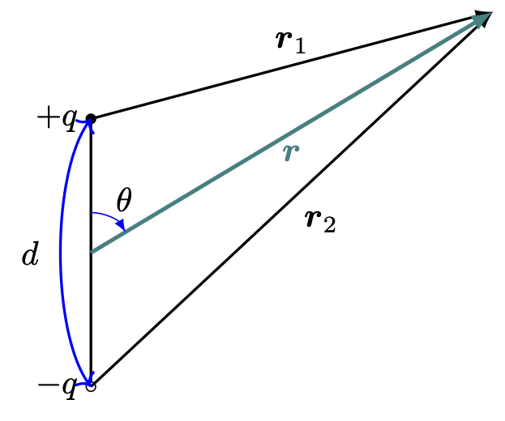
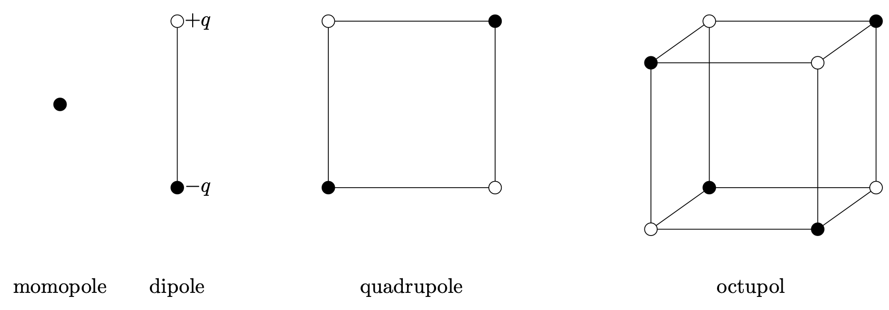
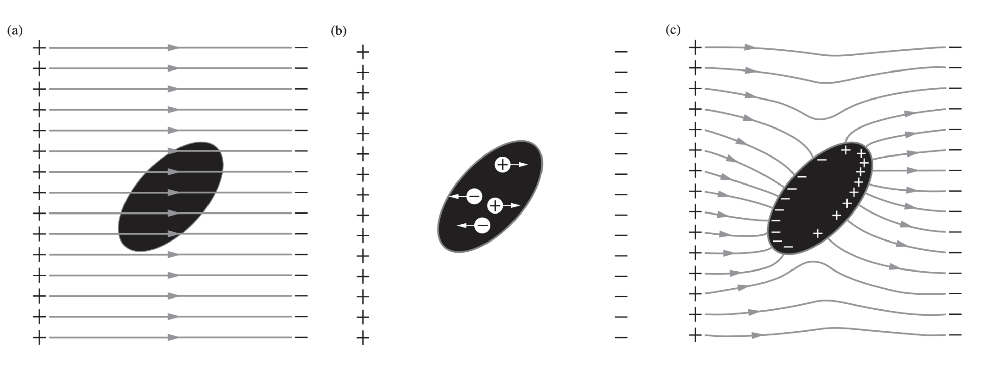
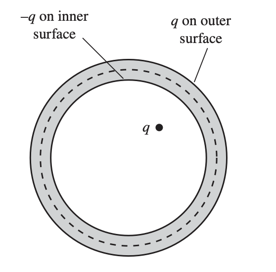
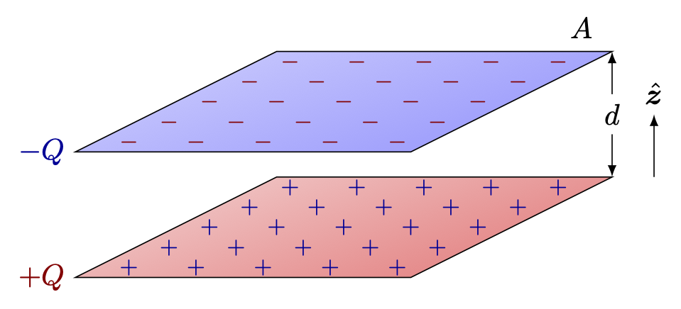
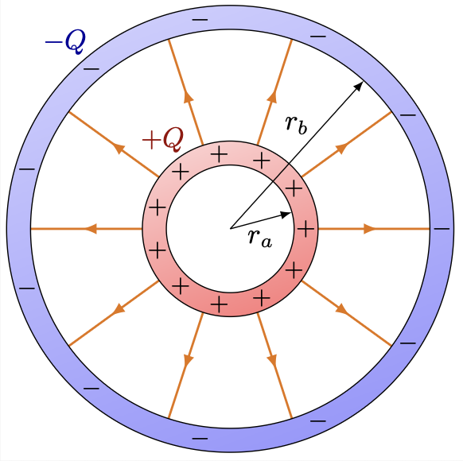
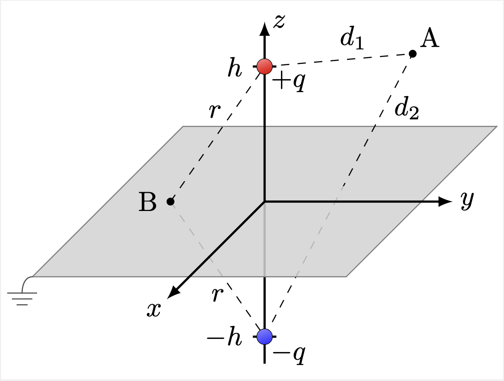
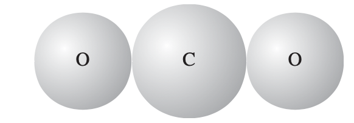
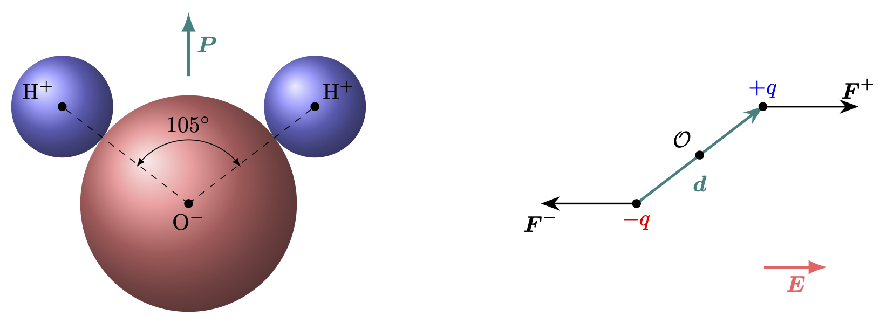
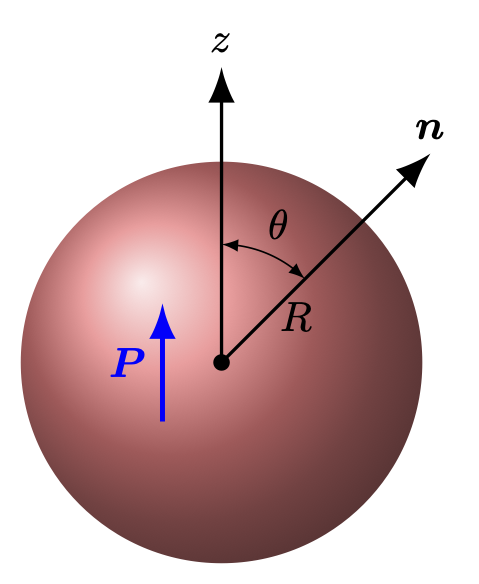

% %
%
\[ \DeclarePairedDelimiters{\set}{\{}{\}} \DeclareMathOperator*{\argmax}{argmax} \]
여기서는 어떤 기준틀에서 \(\rho(\boldsymbol{x},\,t)\) 가 상수인 경우를 다룬다. 이 기준틀에서 전하의 위치는 고정되어 있으며 움직이지 않는다. \(\boldsymbol{J}(\boldsymbol{x},\,t)=0\) 이며 이 때 \(\boldsymbol{B}=\boldsymbol{0}\) 으로 놓을 수 있다. 그렇다면 우리가 가진 멕스웰 방정식은 아래의 두개이다.
\[ \nabla \boldsymbol{\cdot E}= \dfrac{\rho}{\epsilon_0},\qquad \nabla \times \boldsymbol{E}=\boldsymbol{0} \]
13.1 전기장과 정전포텐셜
13.1.1 전기장과 쿨롱힘
가우스 법칙과 발산 정리를 통해 닫힌 곡면 \(S\) 로 둘러쌓인 부피 \(V\) 에 대해
\[ \int_V (\nabla \boldsymbol{\cdot E}) \, d^3 \boldsymbol{r} = \int_S \boldsymbol{E\cdot}d\boldsymbol{a} = \dfrac{1}{\epsilon_0}\int_V \rho(\boldsymbol{x})\,d^3 \boldsymbol{r} = \dfrac{Q}{\epsilon_0} \]
이다. 여기서 \(Q\) 는 부피 \(V\) 에 포함된 총 전하량이다. 이로부터 우리는 아래의 가우스 법칙의 적분형태를 얻는다.
\[ \oint_S \boldsymbol{E\cdot}d\boldsymbol{a} = \dfrac{Q}{\epsilon_0}. \tag{13.1}\]
원점에 놓인 점전하 \(q'=q'\,\delta(\boldsymbol{x})\) 을 생각하자. 원점을 중심으로 반지름 \(r\) 인 구를 적분하는 부피로 잡으면 이 부피 안에 전하는 \(q\) 이다. 또한 구면좌표계에서 \(d\boldsymbol{a} = r^2 \sin\theta \,d\varphi d\theta\hat{\boldsymbol{r}}\) 이며 \(\boldsymbol{E}\) 는 대칭에 의해 표면에서 그 크기가 같고 \(\hat{\boldsymbol{r}}\) 방향이어야 하므로 \(\boldsymbol{E}=E(r)\hat{\boldsymbol{r}}\) 로 놓을 수 있다. 그렇다면
\[ \dfrac{q'}{\epsilon_0} = \int_S \boldsymbol{E\cdot}d\boldsymbol{a} = 4\pi r^2 E(r) \]
이므로
\[ \boldsymbol{E}(\boldsymbol{r}) = \dfrac{1}{4\pi\epsilon_0}\dfrac{q'}{r^3}\boldsymbol{r} \tag{13.2}\]
이며 로런츠 힘을 생각하면 위치 \(\boldsymbol{r}\) 의 전하 \(q\) 가 받는 힘은
\[ \boldsymbol{F} = q\boldsymbol{E}(\boldsymbol{r}) = \dfrac{1}{4\pi \epsilon_0}\dfrac{qq'}{r^3}\boldsymbol{r} \tag{13.3}\]
이다. 이 \(\boldsymbol{F}\) 는 원점에 위치한 점전하 \(q'\) 에 의해 \(\boldsymbol{r}\) 에 위치한 \(q\) 가 받는 힘을 의미하며 이런 점전하에 희한 힘을 쿨롱힘(Coulomb force) 이라고 한다.
\(\boldsymbol{r}'\) 에 위치한 점전하 \(q'\) 에 의해 생성되는 전기장과 \(\boldsymbol{r}\) 에 위치한 점전하 \(q\) 가 받는 힘은 다음과 같다는 것을 알 수 있다.
\[ \boldsymbol{E}(\boldsymbol{r}) = \dfrac{1}{4\pi\epsilon_0} \dfrac{q'(\boldsymbol{r}-\boldsymbol{r}')}{\|\boldsymbol{r}-\boldsymbol{r}'\|^3}, \tag{13.4}\]
\[ \boldsymbol{F} = \dfrac{1}{4\pi\epsilon_0} \dfrac{qq'(\boldsymbol{r}-\boldsymbol{r}')}{\|\boldsymbol{r}-\boldsymbol{r}'\|^3}. \tag{13.5}\]
또한 점전하가 아니라 전하분포 \(\rho(\boldsymbol{r}')\) 에 의해 성성되는 전기장은 다음과 같다는 것을 알 수 있다.
\[ \boldsymbol{E}(\boldsymbol{r}) = \dfrac{1}{4\pi\epsilon_0} \int_V \dfrac{\rho(\boldsymbol{r}')(\boldsymbol{r}-\boldsymbol{r}')}{\|\boldsymbol{r}-\boldsymbol{r}'\|^3} \,d^3\boldsymbol{r}, \tag{13.6}\]
13.1.2 정전 포텐셜
정전 포텐셜
헬름홀츠 정리 와 정전기 상태의 멕스웰 방정식으로부터 벡터장 \(\boldsymbol{E}\) 는 스칼라장
\[ \Phi(\boldsymbol{r}) := \dfrac{1}{4\pi\epsilon_0}\int_V \dfrac{\rho(\boldsymbol{r}')}{\|\boldsymbol{r}-\boldsymbol{r}'\|}d^3\boldsymbol{r} \tag{13.7}\]
에 대해
\[ \boldsymbol{E}=-\nabla \Phi \tag{13.8}\]
이다. 이 때 \(\Phi(\boldsymbol{r})\) 을 정전 포텐셜(electrostatic potential) 이라고 한다.
쿨롱힘과 보존력
정전기 상태일 경우 식 13.8 로 부터
\[ \Delta \Phi_{12}=\Phi(\boldsymbol{r}_2)-\Phi(\boldsymbol{r}_1) = - \int_{\boldsymbol{r}_1}^{\boldsymbol{r}_2} \boldsymbol{E\cdot}d\boldsymbol{l} \tag{13.9}\]
이다. 우변의 적분은 경로에 무관하며 따라서 \(\boldsymbol{r}_2\) 에서 \(\boldsymbol{r}_1\) 까지 전하를 이동시킬때의 일 \(W_{12}\) 는 다음과 같다.
\[ W_{12} = q\int_{\boldsymbol{r}_1}^{\boldsymbol{r}_2} \boldsymbol{E\cdot}d\boldsymbol{l}= - q\Delta \Phi_{12}. \tag{13.10}\]
푸아송 방정식과 라플라스 방정식
정전기 상태에서
\[ \boldsymbol{E}(\boldsymbol{r}) = - \nabla \Phi (\boldsymbol{r}) \]
이며, \(\nabla \boldsymbol{\cdot E}(\boldsymbol{r}) = \rho/\epsilon_0\) 로부터 아래의 미분방정식을 얻는다.
\[ \boxed{\nabla^2 \Phi = -\dfrac{\rho}{\epsilon_0}.} \tag{13.11}\]
위의 미분방정식을 푸아송 방정식(Poisson equation) 이라고 한다. 전하 밀도가 \(0\) 인 곳에서는 \(\Phi(\boldsymbol{r})\) 는 아래와 같은 라플라스 방정식(Laplace equation) 을 만족한다.
\[ \boxed{\nabla^2\Phi = 0.} \tag{13.12}\]
포텐셜의 기준점
일반적으로 포텐셜은 어떤 기준점 \(\mathcal{O}\) 을 정하고 그 기준점과의 포텐셜 차이를 포텐셜로 정한다. 즉
\[ \Phi(\boldsymbol{r}) = -\int_{\mathcal{O}}^{\boldsymbol{r}}\boldsymbol{E}\boldsymbol{\cdot}\,d\boldsymbol{l} \]
기준점이 바뀌더라도 포텐셜에는 상수 만큼의 차이밖에 나지 않으며 물리에는 변화가 없다. \(\displaystyle \lim_{|\boldsymbol{r}\|\to \infty} \Phi(\boldsymbol{r})=0\) 이면 무한히 먼 점을 기준으로 사용한다.
중첩의 원리
푸아송 방정식을 보자. 전하 밀도 \(\rho_1\) 에 대해 포텐셜 \(\Phi_1\) 을 얻고 \(\rho_2\) 에 대해 포텐셜 \(\Phi_2\) 를 얻었다면 \(\nabla^2 (\Phi_1+ \Phi_2) = (\rho_1+\rho_2)/\epsilon_0\) 이다. 이것은 전기장 \(\boldsymbol{E}_1,\,\boldsymbol{E}_2\) 에 대해서도 마찬가지이다. 이를 중첩 원리 (principle of superposition) 라고 한다.
점전하에 의한 포텐셜
원점에 위치한 점전하 \(q\) 에 의한 포텐셜은 식 13.9 를 이용하여 계산하면 아래와 같다.
\[ \Phi(\boldsymbol{r}) = -\int_{\infty}^{\boldsymbol{r}} \dfrac{1}{4\pi\epsilon_0}\dfrac{q\boldsymbol{r'\cdot}\,d^3\boldsymbol{r'}}{r'^3} = -\dfrac{q}{4\pi\epsilon_0} \int_{\infty}^r \dfrac{dr'}{r'^2} = \dfrac{q}{4\pi\epsilon_0 r} \]
즉, \(\boldsymbol{r}'\) 에 위치한 점전하 \(q\) 에 의해 발생하는 \(\boldsymbol{r}\) 에서의 포텐셜 \(\Phi(\boldsymbol{r})\) 은 다음과 같다.
\[ \Phi(\boldsymbol{r})= \dfrac{1}{4\pi\epsilon_0}\dfrac{q}{\|\boldsymbol{r}-\boldsymbol{r}'\|}. \tag{13.13}\]
정전기 시스템의 경계 조건
우선 표면 전하 밀도가 \(\sigma\) 인 표면에 면적 \(A\) 인 원통형의 얇은 가우스 표면을 생각하자. 원통의 축은 표면에 수직으로 잡자. 표면을 기준으로 영역을 \(1\), \(2\) 로 나누고 영역 \(1\) 의 원의 전기장과 정전포텐셜을 \(\boldsymbol{E}_1\), \(\Phi_1\) , 영역 \(2\) 원의 전기장과 정전포텐셜을 \(\boldsymbol{E}_2\), \(\Phi_2\) 라고 하자. 그리고 영역 \(2\) 의 원에 수직한, 원통 밖을 향하는 단위벡터를 \(\hat{\boldsymbol{n}}_2\) 이라고 하자. 가우스 법칙으로부터 \(\hat{\boldsymbol{n}}_2 \boldsymbol{\cdot} (\boldsymbol{E}_2-\boldsymbol{E}_1)= -\sigma/\epsilon_0\) 이다. \(\boldsymbol{E}=-\nabla \Phi\) 이므로
\[ \dfrac{\partial \Phi_2}{\partial n_2}- \dfrac{\partial \Phi_1}{\partial n_2}= \dfrac{\sigma}{\epsilon_0} \tag{13.14}\]
을 만족해야 한다. 또한 식 13.9 에서 \(\boldsymbol{r}_1\) 은 영역 \(1\), \(\boldsymbol{r}_2\) 는 영역 \(2\) 의 점이며 \(\boldsymbol{r}_1\) 과 \(\boldsymbol{r}_2\) 를 경계 근처에 가깝게 잡고 \(\boldsymbol{r}_1\to \boldsymbol{r}_2\) 극한을 취하면
\[ \Phi_1 (\boldsymbol{r}_{1\to S_0}) = \Phi_2(\boldsymbol{r}_{2\to S_0}) \tag{13.15}\]
를 얻는다.
13.1.3 정전기적 안정평형상태
평형이란 어떤 시스템의 모든 입자에 대해 가해지는 힘이 \(0\) 인 상태이다. 정전기적 안정평형상태, 즉 전하들이 정지된 상태에서 각 전하에 가해지는 힘이 \(0\) 이며 또한 미소 변화에 대해 복원력이 작용하는 전하 분포가 존재할까? 여기서는 서로 겹치지 않는 이산적인 점전하의 분포에서 가능한지 여부를 알아보자. 예를 들어 붙어있는 양전하와 음전하는 안정평형상태라고 볼 수 있다.
\(\boldsymbol{r}\) 에 위치한 전하 \(q\) 에 가해지는 힘 \(\boldsymbol{F} = q\boldsymbol{E} = -q\nabla \Phi\) 이다. 정전기 평형상태이려면 \(\boldsymbol{F}=0\) 이어야 하므로 \(\nabla \Phi(\boldsymbol{r}) = 0\) 이어야 한다. 또한 \(q\nabla^2\Phi >0\) 이어야 한다. 하지만 우리는 전하 분포가 없는 공간에서 \(\nabla^2 \Phi = 0\) 임을 안다. 즉 이산적 전하분포에서 정전기적 안정평형상태는 존재하지 않는다.
우리는 이것에 대해 좀 더 수학적으로 알아보자.
정리 13.1 \(\Phi(\boldsymbol{r})\) 이 라플라스 방정식의 해라면 전하가 없는 공간상의 임의의 구 \(V\) 의 표면 \(S\) 에 대한 적분값의 평균은 구의 중심에서의 함수값과 같다. 즉 구의 중심 \(\boldsymbol{r}_0\) 에 대해 다음이 성립한다.
\[ \dfrac{1}{\text{area of }S} \oint_S \Phi (\boldsymbol{r})\, da = \Phi (\boldsymbol{r}_0) \]
(증명). \(\boldsymbol{r}_0\) 를 원점으로 잡고 원점을 중심으로 반지름 \(R\) 인 구의 표면 \(S\) 를 생각하자. \(\langle \Phi\rangle\) 를 \(S\) 에서의 포텐셜의 평균값이라고 하면
\[ \begin{aligned} \langle \Phi\rangle &= \dfrac{1}{4\pi R^2}\oint_S \Phi(\boldsymbol{r}) da = \dfrac{1}{4\pi}\int \Phi(\boldsymbol{r}) R^2 d\Omega = \dfrac{1}{4\pi} \int \Phi(\boldsymbol{r})d\Omega \\[0.3em] &= \dfrac{1}{4\pi} \int \Phi(R,\,\theta,\,\varphi) d\Omega \end{aligned} \]
이다. 여기서 \(d\Omega\) 는 고체각을 의미한다. 그렇다면
\[ \begin{aligned} \dfrac{d\langle \Phi\rangle}{dR} &= \dfrac{1}{4\pi} \int \dfrac{\partial \Phi}{\partial R}\, d\Omega = \dfrac{1}{4\pi} \int\dfrac{\partial \Phi}{\partial R}\hat{\boldsymbol{R}}\cdot \hat{\boldsymbol{R}} \, d\Omega \\ &= \dfrac{1}{4\pi R^2} \int \nabla \Phi \cdot d\boldsymbol{a} = \dfrac{1}{4\pi R^2}\int_V \nabla^2 \Phi \,dV = 0 \end{aligned} \]
이므로 \(\langle \Phi \rangle=\text{const.}\) 이다. 즉 임의의 구 표면에 대한 평균값은 항상 일정하며 반지름 \(R\to 0\) 극한에서의 평균값은 중앙값일 것이므로 \(\langle \Phi\rangle = \Phi (\boldsymbol{0})\) 이다. \(\square\)
정리 13.2 (Earnshaw 정리) 유한하고 전하가 존재하지 않는 공간 \(R\) 에서의 전기 포텐셜 \(\Phi(\boldsymbol{r})\) 의 극점은 \(R\) 의 경계에서만 존재한다.
(증명). \(R\) 내부의 점 \(\boldsymbol{r}_0\) 이 \(\Phi(\boldsymbol{r})\) 의 극소점이라고 하자. 그렇다면 \(\boldsymbol{r}_0\) 를 중심으로 하는 작은 구 의 표면 \(S_0\) 에 대해 \(\boldsymbol{r}\in S\implies \Phi (\boldsymbol{r}) > \Phi(\boldsymbol{r}_0)\) 이며, 따라서 구의 normal vector \(\hat{\boldsymbol{n}}\) 에 대해 \(\hat{\boldsymbol{n}}\boldsymbol{\cdot} \nabla \Phi (\boldsymbol{r})>0\) 이고,
\[ \int_S\hat{\boldsymbol{n}}\boldsymbol{\cdot}\nabla \Phi \,da >0 \]
이다. 이로부터
\[ 0 < \int_S \hat{\boldsymbol{n}}\boldsymbol{\cdot} \nabla \Phi \, da = - \int_S \hat{\boldsymbol{n}}\boldsymbol{\cdot}\boldsymbol{E}\,da = -\int_R \nabla \cdot E \, d^3\boldsymbol{r} = - \int_R \dfrac{\rho(\boldsymbol{r})}{\epsilon_0}\, d^3\boldsymbol{r} = 0 \]
이므로 모순이다. \(\boldsymbol{r}_0\) 가 극대점일 경우 \(\hat{\boldsymbol{n}}\boldsymbol{\cdot}\nabla \Phi <0\) 이므로 위의 식의 부호가 반대가 되어 역시 모순이 된다. \(\square\)
Earnshow 의 정리로부터 우리는 전하로 이루어진 계가 정전기력만으로는 안정평형상태를 유지할 수 없다는 것을 알 수 있다.
13.1.4 정전기 문제의 유일성 정리
정리 13.3 (정전기 포텐셜의 유일성 정리) 표면 \(S_1,\,S_2,\ldots,\,S_n\) 에 대해 디리클레 경계조건 혹은 노이만 경계조건이 정해진 경우 라플라스 방정식의 해가 존재한다면 그 해는 유일하다.
(증명). \(S_i\) 에서의 경계값을 만족하는 두 정전 포텐셜 \(\Phi_1\) 과 \(\Phi_2\) 가 있다고 하자. 이 때 \(\Psi = \Phi_1-\Phi_2\) 라고 하자. \(\nabla^2 \Phi_1 = \nabla^2 \Phi_2 = 0\) 이므로 \(\nabla^2 \Psi = 0\) 이다. 모든 \(S_i\) 로 둘러쌓여진 영역을 포함하는 큰 영역 \(V_0\) 를 생각하자. \(V_0\) 에서 \(S_i\) 에 의해 둘러쌓인 부분을 제외한 영역을 \(V\) 라고 하면 \(V\) 의 경계면은 \(V_0\) 의 경계면 \(S_0\) 와 \(S_1,\ldots,\,S_n\) 이다. 그 경계 \(\partial V = \bigcup_{k=0}^n S_k\) 를 생각 할 수 있다. 이 \(V\) 에 대해 \(\nabla^2 \Psi = 0\) 와 그린의 제 1 항등식(식 13.18) 을 이용하면
\[ \begin{aligned} \int_V (\nabla \Psi \boldsymbol{\cdot}\nabla \Psi)\,d^3\boldsymbol{r} &= \int_V \left[\nabla \boldsymbol{\cdot} (\Psi \nabla \Psi)- \Psi \nabla^2 \Psi\right]\,d^3\boldsymbol{r} \\[0.3em] &= \int_{\partial V} \Psi \dfrac{\partial \Psi}{\partial \boldsymbol{n}}\boldsymbol{\cdot}d \boldsymbol{a} \end{aligned} \tag{13.16}\]
이다. 여기서
\[ \int_V (\nabla \Psi \boldsymbol{\cdot}\nabla \Psi)\,d^3\boldsymbol{r} = \int_V \|\nabla \Psi\|\,d^3 \boldsymbol{r} \ge 0 \tag{13.17}\]
임을 안다. 또한
\[ \int_{\partial V}\Psi \dfrac{\partial \Psi}{\partial \boldsymbol{n}}\boldsymbol{\cdot}d \boldsymbol{a} \]
을 생각하자. 디리클레 혹은 노이만 경계조건이 정해졌으므로 \(S_1,\ldots,\,S_n\) 에 대해 \(\Psi = 0\) 이거나 \(\partial \Psi/\partial \boldsymbol{n} = \boldsymbol{0}\) 이므로
\[ \int_{\partial V}\Psi \dfrac{\partial \Psi}{\partial \boldsymbol{n}}\boldsymbol{\cdot}d \boldsymbol{a} = \int_{\partial S_0}\Psi \dfrac{\partial \Psi}{\partial \boldsymbol{n}}\boldsymbol{\cdot}d \boldsymbol{a} \]
이다. \(V_0\) 를 모든 \(S_1\) 를 포함하는 매우 큰 반지름 \(R\) 을 갖는 구로 잡으며 \(\Psi \sim 1/R\), \(\|\partial \Psi/\partial \boldsymbol{n}\| \sim 1/R^2\) 이며 \(d\boldsymbol{a} \sim 4\pi \hat{\boldsymbol{R}}R^2 d\Omega\) 이므로 이 적분값은 \(\sim 1/R\) 이다. 즉 \(R\to \infty\) 극한에서 \(0\) 이다. 식 13.17 로부터 \(\Psi = 0\) 임을 알 수 있다. 즉 \(\Phi_1= \Phi_2\) 이다. \(\square\)
도체에 전하 \(Q\) 가 대전되었을 때의 포텐셜 \(\Phi_0\) 가 정해져 있다고 하자. 도체에 대전된 전하는 표면에만 존재하며 따라서 표면 전하 밀도 \(\sigma\) 를 생성한다. 도체에 대전된 전하가 변했을 때 표면전하밀도가 원래의 표면전하 밀도에 단순히 비례할거라는 보장이 없으며 따라서 포텐셜이 대전된 전하량에 비례할것이라는 보장도 없다. 그러나 유일성 정리는 이것을 보장한다.
정리 13.4 전하 \(Q\) 가 대전된 도체 표면 \(S\) 에서의 표면 전하 밀도가 \(\sigma(\boldsymbol{r})\) 라면 \(\lambda Q\) 가 대전된 도체 표면에서의 표면전하밀도는 \(\lambda \sigma(\boldsymbol{r})\) 이다. .
(증명). 전하 \(Q\) 가 대전되어있을 때 \(\sigma = -\epsilon_0 \dfrac{\partial \Phi}{\partial n}\) 이며 도체 밖에서 \(\nabla^2 \Phi = 0\), \(\Phi (\|\boldsymbol{r}\|\to \infty)=0\) 이고 도체 표면에서 정전 포텐셜이 일정한 값 \(\Phi_0\) 를 가진다. \(\lambda Q\) 만큼의 전하가 대전되었을 때의 정전 포텐셜을 \(\Psi\) 를 \(\Psi(\boldsymbol{r})=\lambda \Phi(\boldsymbol{r})\) 라고 하면 \(\Psi\) 역시 라플라스 방정식 \(\nabla^2 \Psi = 0\) 과 \(\Psi (r\to \infty)=0\) 을 만족한다. 또한 표면 전하 밀도 \(\sigma_\lambda = -\epsilon_0 \dfrac{\partial \Psi}{\partial n}= \lambda \sigma\) 로 표면 잔하 밀도의 적분값은 \(\lambda Q\) 이다. 또한 표면에서의 포텐셜 \(\Psi_0 = \lambda \Phi_0\) 역시 등전위면이 된다. 유일성 정리에 의해 \(\Psi=\lambda \Phi\) 이외의 해는 없다. \(\square\)
연습문제 13.1 (그린의 제 1 항등식) 부피 \(V\) 에서 정의된 스칼라장 \(\phi,\,\psi\) 에 대해 다음이 성립함을 보여라.
\[ \int_V \left[\nabla \phi \boldsymbol{\cdot } \nabla \psi + \phi \nabla^2 \psi \right] = \int_{\partial V} (\phi \nabla \psi)\boldsymbol{\cdot}d\boldsymbol{a} \tag{13.18}\]
(해답). \(\nabla \boldsymbol{\cdot}(\phi \nabla \psi) = \nabla \phi \boldsymbol{\cdot} \nabla \psi + \phi \nabla^2 \psi\) 이므로
\[ \begin{aligned} \int_V \left[\nabla \phi \boldsymbol{\cdot } \nabla \psi + \phi \nabla^2 \psi \right] &=\int_V \nabla \boldsymbol{\cdot}(\phi \nabla \psi) dV \quad &;\text{Divergent theorem}\\[0.3em] &=\int_{\partial V} (\phi \nabla \Psi)\boldsymbol{\cdot} d\boldsymbol{a}. \end{aligned} \]
연습문제 13.2 (그린의 제 2 항등식) 부피 \(V\) 에서 정의된 스칼라장 \(\phi,\,\psi\) 에 대해 다음이 성립함을 보여라.
\[ \int_V \left[ \phi \nabla^2 \psi - \psi \nabla^2 \phi \right] = \int_{\partial V} (\phi \nabla \psi - \psi \nabla \phi)\boldsymbol{\cdot}d\boldsymbol{a} \tag{13.19}\]
(해답). 식 13.18 로 부터
\[ [\phi\nabla^2 \psi + \nabla \phi \boldsymbol{\cdot} \nabla \psi] - [\psi\nabla^2 \phi + \nabla \phi \boldsymbol{\cdot} \nabla \psi] = \nabla \boldsymbol{\cdot}\left[\phi \nabla \psi - \psi\nabla \phi\right] \]
임을 안다. 발산정리를 이용하면 식 13.19 를 보일 수 있다.
13.1.5 다중극 전개
쌍극자 모멘트

전하 \(+q\) 와 \(-q\) 가 위의 그림과 같이 \(d\) 의 거리만큼 떨어져 있다고 하고 원점을 두 전하의 중앙에 두자. 그리고 \(+q\) 로부터의 변위를 \(\boldsymbol{r}_1\), \(-q\) 로부터의 변위를 \(\boldsymbol{r}_2\) 라고 하고 원점으로부터의 변위를 \(\boldsymbol{r}\) 라고 하자. 그리고 \(-q\) 전하의 위치로부터 \(+q\) 전하의 위치까지의 변위를 \(\boldsymbol{d}\) 라고 하자. 이 때의 전기 포텐셜 \(\Phi (\boldsymbol{r})\) 은 \(r=\|\boldsymbol{r}\|\) 이라고 할 때 \(r>d\) 의 조건과 식 17.4 와 식 17.6 로부터 다음을 얻는다. \[ \begin{aligned} \Phi(\boldsymbol{r}) &= \dfrac{1}{4\pi\epsilon_0}\left[\dfrac{q}{\|\boldsymbol{r}_1\|} - \dfrac{q}{\|\boldsymbol{r}_2\|}\right] = \dfrac{q}{4\pi\epsilon_0} \left[\dfrac{1}{\|\boldsymbol{r}-\boldsymbol{d}/2\|} - \dfrac{1}{\|\boldsymbol{r}+\boldsymbol{d}/2\|}\right] \\[0.3em] &= \dfrac{q}{4\pi\epsilon_0} \sum_{k=0}^\infty \dfrac{d^k}{2^kr^{k+1}} \left[P_k(\cos\theta)- P_k (-\cos\theta)\right] \\ &=\dfrac{q}{4\pi\epsilon_0} \sum_{k=0}^\infty \dfrac{2d^{2k+1}}{2^{2k+1}r^{2k+2}} P_{2k+1}(\cos\theta) \\ &= \dfrac{q}{4\pi\epsilon_0} \left[\dfrac{d\cos\theta}{r^2} + \dfrac{d^3(5\cos^3\theta - 3\cos \theta) }{8r^4} + \cdots \right] \approx\dfrac{1}{4\pi\epsilon_0} \dfrac{qd\cos\theta}{r^2} \end{aligned} \tag{13.20}\]
즉 같은 크기의 양전하와 음전하가 떨어져 있다면 총 전하량이 \(0\) 이지만 그 변위의 차이로 인해 \(r^{-2}\) 에 비례하는 정전포텐셜이 존재하는 경우이다. 이렇게 전하 분포가 균일하지 않으면 전체 전하의 합이 \(0\) 이더라도 그 불균일성으로 인해 전위가, 따라서 전기장이 존재 할 수 있다. 식 13.20 에서 \(1/r^2\) 에 비례하는 부분에 대해 전기 쌍극자 모멘트(electric dipole moment) \(\boldsymbol{p}\) 를
\[ \boxed{\boldsymbol{p}:=q\boldsymbol{d}} \tag{13.21}\]
로 정의하면 전기 쌍극자 모멘트에 의한 전기 포텐셜 \(\Phi_d(\boldsymbol{r})\) 은 다음과 같다. \[ \Phi_d (\boldsymbol{r})= \dfrac{1}{4\pi\epsilon_0} \dfrac{\boldsymbol{p\cdot r}}{r^3} \tag{13.22}\]
이로부터 쌍극자 모멘트에 의한 전기장 \(\boldsymbol{E}_d(\boldsymbol{r})\) 을 구하면 아래와 같다.
\[ \boldsymbol{E}_d(\boldsymbol{r}) = -\nabla \Phi_d(\boldsymbol{r}) = \dfrac{1}{4\pi\epsilon_0} \left(\dfrac{3(\boldsymbol{p\cdot \hat{\boldsymbol{r}}})\hat{\boldsymbol{r}}-\boldsymbol{p}}{r^3}\right) \tag{13.23}\]
다중극 전개
식 17.4 를 사용하여 전하 분포 \(\rho(\boldsymbol{r}')\) 에 대해 \(\|\boldsymbol{r}\| > \|\boldsymbol{r}'\|\) 일 때의 전기 포텐셜을 계산하면
\[ \begin{aligned} \Phi(\boldsymbol{r}) &=\dfrac{1}{4\pi\epsilon_0}\int_V \dfrac{\rho(\boldsymbol{r}')}{\|\boldsymbol{r}-\boldsymbol{r}'\|}\,d^3\boldsymbol{r}' \\[0.3em] &= \dfrac{1}{4\pi\epsilon_0}\sum_{k=0}^\infty \dfrac{1}{\|\boldsymbol{r}\|^{k+1}} \int_V \|\boldsymbol{r}'\|^k P_k(\cos\theta')\,\rho(\boldsymbol{r}')\,d^3\boldsymbol{r'} \\[0.3em] &= \dfrac{1}{4\pi\epsilon_0}\left[\dfrac{1}{r}\int_V \rho(\boldsymbol{r}')\, d^3\boldsymbol{r}' + \dfrac{1}{r^2}\int_V r'\cos \gamma \, \rho(\boldsymbol{r}')\,d^3\boldsymbol{r}' \right.\\[0.3em] &\qquad \qquad + \left.\int_V r'^2\left(\dfrac{3}{2}\cos^2 \gamma' - \dfrac{1}{2}\right)\rho(\boldsymbol{r}') \, d^3\boldsymbol{r}' + \cdots \right] \end{aligned} \]
이다. 즉, 다중극 모멘트 \(Q_k\)
\[ Q_k := \int_V (r')^k P_k(\cos\gamma)\,\rho(\boldsymbol{r}')\,d^3\boldsymbol{r'} \tag{13.24}\]
에 대해 전기 포텐셜을 다음과 같이 쓸 수 있다. \[ \Phi(\boldsymbol{r}) = \dfrac{1}{4\pi\epsilon_0} \sum_{k=0}^\infty \dfrac{Q_k}{r^{k+1}} \tag{13.25}\]
여기서 전기 쌍극자 모멘트 \(Q_1\) 은
\[ Q_1 = \int_V r' \cos \gamma \rho(\boldsymbol{r}')\, d^3\boldsymbol{r}' \]
이며 그림 13.1 의 전하 분포 \(\rho(\boldsymbol{r}') = q\delta(\boldsymbol{r}'-\boldsymbol{d}/2) -q\delta(\boldsymbol{r}'+\boldsymbol{d}/2)\) 및 \(\boldsymbol{p}= q\boldsymbol{d}\) 를 대입하면 \(Q_1 = qd\cos \gamma\) 이고 식 13.22 의 결과를 얻는다.
르장드르 다항식을 이용한 다중극 전개는 위치 벡터 \(\boldsymbol{r}\) 을 중심으로 전개하지만 식 17.19 를 이용하여 구면조화함수를 사용하면 정해진 좌표계에서 표현 할 수 있다. 즉
\[ \begin{aligned} \Phi(\boldsymbol{r}) &= \dfrac{1}{4\pi\epsilon_0} \sum_{l=0}^\infty \sum_{m=-l}^l \dfrac{4\pi}{2l+1}\dfrac{Y_l^m (\theta,\, \varphi) }{r^{l+1}} \int_V (r')^l {Y_{l}^m}^\ast (\theta',\, \varphi') \rho(r',\,\theta',\, \varphi') \, d^3\boldsymbol{r}' \end{aligned} \tag{13.26}\]
이다. 여기서 구면좌표계에서 \(d^3\boldsymbol{r}' = r'^2 \sin \theta' \, dr'd\theta'd\varphi'\) 임을 알며
\[ \begin{aligned} Q_{lm} := & \int_V (r')^l {Y_{l}^m}^\ast (\theta',\, \varphi') \rho(r',\,\theta',\, \varphi') \, d^3\boldsymbol{r}' \\[0.3em] =&\int_V (r')^{l+2} {Y_{l}^m}^\ast (\theta',\, \varphi') \rho(r',\,\theta',\, \varphi') \, \, dr'd\sin\theta' d\varphi' \end{aligned} \tag{13.27}\]
이라고 하면
\[ \Phi(\boldsymbol{r}) = \dfrac{1}{4\pi\epsilon_0} \sum_{l=0}^\infty \sum_{m=-l}^l \dfrac{4\pi}{2l+1}\dfrac{Y_l^m (\theta,\, \varphi) }{r^{l+1}} Q_{lm} \tag{13.28}\]
이다.
예제 13.1 식 13.28 을 이용하여 아래 그림의 다중극 상태를 보자.

Monopole
\(\rho(\boldsymbol{r}') = q\delta(\boldsymbol{r}') = \dfrac{q}{r'^2 \sin \theta'}\,\delta(r')\delta(\theta')\delta(\varphi')\) 이다.
\[ \begin{aligned} Q_{lm} &= q\int_{V} (r')^{l} {Y_{l}^{m}}^\ast (\theta',\, \varphi') \delta (r')\delta(\theta')\delta(\varphi') dr'd\theta'd\varphi' \\ &= q{Y_0^0}^\ast(0,\, 0)\delta_{l0}\delta_{m0} \end{aligned} \]
이므로
\[ \Phi(\boldsymbol{r}) = \dfrac{1}{4\pi\epsilon_0} \dfrac{4\pi q}{r} Y_0^0(\theta,\, \varphi){Y_0^0}^\ast(0,\,0)=\dfrac{1}{4\pi\epsilon_0} \dfrac{q}{r} \]
이다.
Dipole
\(\rho(\boldsymbol{r}') = q\delta\left(\boldsymbol{r}'-\dfrac{d}{2}\hat{\boldsymbol{z}}\right) - q\delta\left(\boldsymbol{r}'+\dfrac{d}{2}\hat{\boldsymbol{z}}\right)\) 라면, 즉 전하가 \(z\) 축상에 위치한다면
\[ Q_{lm} = q\left(\dfrac{d}{2}\right)^{l}\left[{Y_{l}^m}^\ast (0, 0) - {Y_l^m}^\ast(\pi,0)\right] \]
이다. 식 17.15 의 두번째 식으로 부터
\[ \begin{aligned} Q_{lm}&= q\left(\dfrac{d}{2}\right)^{l} \left(1-(-1)^l\right) {Y_{l}^m}^{\ast}(0, 0) \\[0.3em] &= \dfrac{q\sqrt{2l+1} }{\sqrt{4\pi}}\delta_{m0} \left(\dfrac{d}{2}\right)^{l} \left(1-(-1)^l\right) \end{aligned} \]
이다. \(l\) 이 홀수일 때만 \(Q_{lm}\ne 0\) 이므로 전기 포텐셜은 \[ \begin{aligned} \Phi(\boldsymbol{r}) &= \dfrac{2q}{4\pi\epsilon_0} \sum_{l=1,\,l=\text{odd}}^\infty \sqrt{\dfrac{4\pi}{2l+1}}\dfrac{Y_{l}^0(\theta,\,\varphi)}{r^{l+1}} \left(\dfrac{d}{2}\right)^{l} \\ &= \dfrac{2q}{4\pi\epsilon_0} \left[\sqrt{\dfrac{4\pi}{3}} \dfrac{Y_{1}^0(\theta,\varphi)}{r^2}\left(\dfrac{d}{2}\right) + \sqrt{\dfrac{4\pi}{7}} \dfrac{Y_3^0(\theta,\, \varphi)}{r^4}\left(\dfrac{d}{2}\right)^{3} + \cdots\right] \\[0.3em] &= \dfrac{1}{4\pi\epsilon_0}\left[\dfrac{qd \cos \theta}{r^2} + \dfrac{qd^3(5\cos^3\theta - 3 \cos \theta)}{8r^4} + \cdots \right] \end{aligned} \]
전기 포텐셜의 첫번째 항은 식 13.22 와 같음을 알 수 있다.
13.2 정전기 에너지
13.2.1 정전기 에너지의 의미
정전기 에너지는 역학적 포텐셜 에너지와 같이 무한히 먼 지점에서 특정 지점까지 전하 \(q\) 를 움직이는데 해준 일을 의미한다. 즉 정전기 에너지 \(U(\boldsymbol{r})\) 는 다음과 같다.
\[ U(\boldsymbol{r}) = -\int_{\infty}^\boldsymbol{r} \boldsymbol{F\cdot}\, d\boldsymbol{l} = q\int_{\infty}^\boldsymbol{r} \nabla \Phi \boldsymbol{\cdot}\,d\boldsymbol{l} = q\Phi(\boldsymbol{r}). \tag{13.29}\]
여기서 \(\Phi(\infty) = 0\) 이라는 경계조건을 사용하였다.
13.2.2 점전하 시스템의 정전기 에너지
이제 전하 \(q_1,\ldots,\,q_N\) 을 각각 순서대로 \(\boldsymbol{r}_1,\ldots,\,\boldsymbol{r}_N\) 에 위치시키는데 필요한 일을 알아보자. \(1\le i < j\le N\) 에 대해 \(W_{ij}\) 를 이미 \(\boldsymbol{r}_i\) 에 위치한 전하 \(q_i\) 가 존재할 때 \(q_j\) 를 \(\infty\) 에서 \(\boldsymbol{r}_j\) 까지 이동시키는 데 필요한 일이라고 하면,
\[ W_{ij} = \dfrac{q_iq_j}{4\pi\epsilon_0r_{ij}} \tag{13.30}\]
이다. 여기서 \(r_{ij} = \|\boldsymbol{r}_i-\boldsymbol{r}_j\|\) 이다. 그렇다면 이 전하를 배치하는데 필요한 일 \(W_{\text{tot}}\) 는
\[ \begin{aligned} W_{\text{tot}} &= W_{12} + W_{13}+ W_{23} + W_{14}+ W_{24}+W_{34}+W_{44} + \cdots \\[0.3em] &= \sum_{1\le i<j\le <N} W_{ij} = \dfrac{1}{2} \sum_{1\le i\ne j \le N} W_{ij} \end{aligned} \]
이다. 즉 이 시스템의 정전기 에너지 \(U(\boldsymbol{r})\) 은 \(W_\text{tot}\) 와 같으므로
\[ U(\boldsymbol{r}) = \dfrac{1}{2} \sum_{i,\,j=1,\, i\ne j}^N \dfrac{q_iq_j}{4\pi\epsilon_0 r_{ij}} = \dfrac{1}{2} \sum_{i=1}^N q_i \Phi(\boldsymbol{r_i}) \tag{13.31}\]
임을 알 수 있다. 또한 이로부터 정전기 에너지 밀도 \(u\) 를
\[ u := \dfrac{\epsilon_0 \|\boldsymbol{E}\|^2}{2} \tag{13.32}\]
로 정의 할 수 있다.
13.2.3 전하 분포의 정전기 에너지
이제 점전하가 아니라 전하가 연속적인 분포를 이룰 경우에 대해 생각해보자. 전하의 분포가 특정 영역에 한정되어 있다고 가정한다. 그렇다면 식 13.31 은 아래와 같이 변경 될 수 있을 것이다.
\[ U = \dfrac{1}{2} \int \rho (\boldsymbol{r})\,\Phi (\boldsymbol{r})\,d^3\boldsymbol{r} \]
이 식은 아래와 같이 변경 될 수 있다.
\[ \begin{aligned} U &= \dfrac{1}{2} \int \epsilon_0 (\nabla \boldsymbol{\cdot E}) \Phi \,d^3\boldsymbol{r} = \dfrac{\epsilon_0}{2} \int \left[\nabla \boldsymbol{\cdot} (\boldsymbol{E}\Phi) - \boldsymbol{E\cdot} \nabla \Phi\right]\,d^3\boldsymbol{r} \\[0.3em] &= \dfrac{\epsilon_0}{2}\int_S \Phi \boldsymbol{E \cdot} d\boldsymbol{a} + \dfrac{1}{2}\int \epsilon_0\|\boldsymbol{E}\|^2 \,d^3\boldsymbol{r} \end{aligned} \]
만약 우리가 전체 공간에 대해 적분을 한다고 생각해보자. 그렇다면 첫번째 항은 \(\Phi(r\to \infty) = 0\) 조건에 의해 \(0\) 이 될 것이며, 따라서 다음을 얻게 된다.
\[ U = \dfrac{\epsilon_0}{2} \int_{\text{Universe}} \|\boldsymbol{E}\|^2\,d^3\boldsymbol{r} \tag{13.33}\]
13.2.4 정전기 에너지 비교
자 이제 식 13.30 와 식 13.33 을 비교해보자. \(e,\,-e\) 의 전하를 가진 두 입자가 떨어져 있다면 그 전기 포텐셜 에너지는 식 13.30 에 의하면 음수이고 식 13.33 에 의하면 양수이다. 이 차이는 어디서 왔을까?
우선 우리의 유도 과정을 살펴보자 우리는 식 13.31 에서 \(q_i \Phi(\boldsymbol{r}_i)\) 를 \(\rho(\boldsymbol{r})\Phi(\boldsymbol{r})\) 로 바꾸어 식 13.33 을 얻었다. 식 13.31 에서는 각각의 전하 \(q_i\) 가 이미 조립된 상태로 존재하지만 식 13.33 에서는 그렇지 않다는 것이다. 예를 들어 전하 \(q=-e\) 를 가진 전자에 의한 정전기 에너지를 계산해 보자. 이 때 전자의 반경을 \(r_e\) 라고 하고 식 13.33 를 사용하면
\[ U = \dfrac{\epsilon_0}{2} \int \dfrac{e^2}{4^2\pi^2 \epsilon_0^2 r^4}r^2 d\Omega = \dfrac{e^2}{8\pi \epsilon_0 r_e} \]
이며 \(r_e\to 0\) 극한에서 발산한다. 물론 점전하가 아니라 연속적인 전하분포에서는 발산하지 않지만 정전기 에너지에 큰 양의 기여를 하기때문에 식 13.33 가 양수인 것을 설명 할 수 있다. 여기에 대해 더 정확하게 이해하기 위해서는 여기의 범위를 벗어나는 양자전기역학이 필요하다.
13.2.5 전기쌍극자 사이의 상호작용
식 13.22 은 전기 쌍극자에 의한 포텐셜이다. 두 쌍극자 \(\boldsymbol{p}_1,\, \boldsymbol{p}_2\) 에 의한 정전기 에너지를 생각하자. \(\boldsymbol{p}_2=q\boldsymbol{d}_2\) 라고 하자. 전하 \(q\) 가 \(\boldsymbol{r}+\dfrac{\boldsymbol{d}}{2}\) 에, 전하 \(-q\) 가 \(\boldsymbol{r}-\dfrac{\boldsymbol{d}}{2}\) 에 위치한다고 하고 \(r \gg d\) 라고 하자. 두 쌍극자에 의한 정전기 에너지 \(U\) 는 다음과 같다.
\[ \begin{aligned} U &= \dfrac{q}{2}\left[\Phi\left(\boldsymbol{r}+\dfrac{\boldsymbol{d}}{2}\right)-\Phi\left(\boldsymbol{r}-\dfrac{\boldsymbol{d}}{2}\right)\right] = \dfrac{q}{2} \boldsymbol{d \cdot } \nabla \Phi (\boldsymbol{r}) \\[0.3em] &= \dfrac{q}{8\pi\epsilon_0} \left(\dfrac{\boldsymbol{d\cdot p}_1}{r^3} - \dfrac{3(\boldsymbol{p}_1\boldsymbol{\cdot r})(\boldsymbol{d\cdot r})}{r^5}\right) \\[0.3em] &= \dfrac{1}{8\pi\epsilon_0}\left(\dfrac{\boldsymbol{p}_1\boldsymbol{\cdot p}_2}{r^3} - \dfrac{3(\boldsymbol{p}_1 \boldsymbol{\cdot r})(\boldsymbol{p}_2 \boldsymbol{\cdot r})}{r^5}\right). \end{aligned} \]
이제 \(\boldsymbol{r}_1,\ldots,\boldsymbol{r}_N\) 에 위치한 전기쌍극자 \(\boldsymbol{p}_1,\ldots,\,\boldsymbol{p}_N\) 로 이루어진 시스템을 생각하자. 이 시스템의 정전기 에너지 \(U\) 는 다음과 같다.
\[ U = \dfrac{1}{2}\sum_{i,\,j=1,\,i\ne j}^N \dfrac{1}{8\pi\epsilon_0}\left(\dfrac{\boldsymbol{p}_1\boldsymbol{\cdot p}_2}{\|\boldsymbol{r}_i-\boldsymbol{r}_j\|^3} - \dfrac{3(\boldsymbol{p}_i \boldsymbol{\cdot}(\boldsymbol{r}_i-\boldsymbol{r}_j))(\boldsymbol{p}_j \boldsymbol{\cdot}(\boldsymbol{r}_i-\boldsymbol{r}_j))}{\|\boldsymbol{r}_i-\boldsymbol{r}_j\|^5}\right). \tag{13.34}\]
13.3 도체
13.3.1 도체의 기본적 성질
도체 (conductor) 는 전자가 자유롭게 움직 일 수 있는 공간적인 영역을 의미한다. 또한 자유롭게 움직일 수 있는 전자가 충분히 많다는 것을 가정한다. 일반적으로 도체는 금속을 의미하며 금속은 보통 원자당 하나 이상의 자유전자를 가지므로 거시적인 시스템에서 도체의 자유전자의 개수는 \(10^{23}\) 이상으로 충분히 많다. 이 짧은 정의로부터 우리는 아래와 같은 사실을 유추할 수 있다.
정리 13.5 (도체의 기본적인 성질) 도체 내부에서 받는 힘 \(\boldsymbol{F}=0\) 이며, 따라서 다음이 성립한다.
(\(1\)) 도체 내부에서 전기장 \(\boldsymbol{E}=\boldsymbol{0}\) 이다.
(\(2\)) 도체 내부에서 정전기 포텐셜 \(\Phi\) 는 상수이다.
(\(3\)) 도체 내부에서 전하 밀도 \(\rho = 0\) 이다.
(\(4\)) 도체가 포함하는 전하의 합이 \(0\) 이 아닐 때 그 여분의 전하는 도체 표면에 존재한다.
(\(5\)) 도체 표면의 전기장은 표면에 대해 수직방향이다.
(\(6\)) 도체 표면의 전하밀도가 \(\sigma\) 일 때 도체 표면 바로 바깥의 전기장의 크기는 \(\dfrac{\sigma}{\epsilon_0}\) 이다.
(증명). (\(1\)) \(\boldsymbol{F}=0\) 으로부터 \(\boldsymbol{E}=0\) 이다.
(\(2\)) \(\boldsymbol{E}= \nabla \Phi\) 로부터 자명하다.
(\(3\)) \(\boldsymbol{E} =\rho/\epsilon_0\) 로부터 자명하다.
(\(4\)) (\(3\)) 으로부터 도체 내부에서 \(\rho=0\) 이므로 유일하게 남은 가능성은 이것뿐이다.
(\(5\)) 도체 내부에서 \(\Phi\) 가 상수이고 \(\Phi\) 는 연속이므로 도체 포면에서 \(\nabla \Phi\) 는 표면에 수직방향이다.
(\(6\)) 가우스법칙과 \(\boldsymbol{E}_{\text{in}} = 0\) 으로부터 \(\boldsymbol{E}_{\text{out}} = \sigma/\epsilon_0 \hat{\boldsymbol{n}}\) 이다. 여기서 \(\hat{\boldsymbol{n}}\) 은 도체 표면에 수직방향인 단위벡터이다. \(\square\)
유도 전하

외부의 전기장에 대해 도체 내의 자유롭게 움직일 수 없는 전하들이 움직이며, 위의 그림 (\(c\)) 에서 보듯이 이동한 전하들에 의한 전기장은 외부의 전기장을 상쇄하는 방향으로 이루어진다. 도체 내에서 자유롭게 움직일 수 있는 전하가 아주 많기 때문에 이 과정은 도체 내부의 전기장이 \(0\) 이 될 때 까지 이루어진다. 전하가 도체 바깥으로 탈출할 수 없다고 가정하면 당연히 이렇게 움직인 전하는 표면에 모여 있을 수 밖에 없다. 이렇게 외부 전기장에 의해 표면에 나타나는 전하를 유도 전하 (induced charge) 라고 한다.
예제 13.2 (구 대칭 전기장) 반지름 \(R\) 인 도체의 구 껍질을 생각하자. 구의 내부에 전하 \(q\) 가 있을 때의 구 외부의 전기장은 전하 \(q\) 가 구의 중심에 있고 구 껍질이 사라졌을 때의 전기장과 같는 것을 보이자. 구 껍질은 안쪽 면과 바깥쪽 면이 존재하며 안쪽 면과 바깥쪽 면 사이의 도체 부분에 아래 그림과 같은 가우스 면을 생각하자.

도체 내부의 전기장은 \(\boldsymbol{0}\) 이기 때문에 가우스 면에 가우스 법칙을 적용하면
\[ \dfrac{Q_{in}}{\epsilon_0} = \int \boldsymbol{E\cdot}d\boldsymbol{a} = \pi R_{\text{in}}^2 E = 0 \]
이다. 즉 구 내부의 전하 \(q\) 에 대해 구 껍질의 안쪽 면에 \(-q\) 의 유도 전하가 발생하며 따라서 구 껍질의 바깥족 면에는 \(+q\) 의 유도 전하가 발생하게 된다. \(q\) 의 전하가 구의 중심에 있지 않다면 구 껍찔 안쪽 면의 유도전하는 균일하지 않다. 그러나 일단 구 껍질 내부 유도전하가 \(q\) 의 전하를 구 내부 껍찔 외부에서 가리기 때문에 구 껍질 외부의 포텐셜 혹은 전기장을 결정하는 것은 구 껍찔 바깥쪽 면에 유도되는 유도전하의 분포이다.
그렇다면 이제 구 껍질 바깥쪽의 유도 전하를 보자. 일단 구 껍질 바깥쪽의 전하들은 자기 자신들에 의해 발생하는 전기장 이외의 전기장을 느낄 수 없으며, 따라서 균일하게 분포 할 수 밖에 없다. 즉 구 껍찔 바깥족 면은 균일한 면 전하 밀도 \(\dfrac{q}{4\pi R^2}\) 를 가지며, 따라서 구 껍질 외부에서의 포텐셜은 가우스 법칙에 따라
\[ \Phi (r>R)= \dfrac{1}{4\pi\epsilon_0}\dfrac{q}{r} \]
이다.
좀 더 일반적으로 구형이 아닌, 어떤 전하를 내부에 포함하는 임의의 도체 껍질을 생각하자. 중요한 것은 도체 껍질 내부의 가우스 면의 전기장이 \(0\) 이기 때문에 도체 껍질 외부의 전기장 혹은 포텐셜은 전하의 위치와는 무관하게 도체 껍질 내부의 전하를 무시하고 그 전하가 도체 껍질 외부에 분포하고 있을 때의 전기장 혹은 포텐셜만 생각하면 된다는 것이다.
13.3.2 톰슨 정리
모든 물리적 계(system)는 역학적 평형 상태에서 총 에너지를 최소화하도록 전하 밀도를 배열한다. 양자역학적 에너지 기여도와 정전기적 에너지 기여도가 경쟁하여 전하 배열을 결정하는 정도에 따라 다를 뿐이다.
도체는 총 에너지에서 양자역학적 기여가 무시할 정도로 작은 계(단, 물체의 크기와 형상을 결정하는 역할은 예외)이다. 이는 정전 유도의 근본적인 기원과 도체의 차폐 및 스크리닝(screening) 특성이 오직 고전적 정전기적 에너지를 최소화하는 것에서 비롯된다는 것을 의미한다. 이러한 내용이 톰슨(Thomson)의 정전기학 정리(theorem of electrostatics)이며, 이는 샘플의 총 전하, 형상 및 부피를 유지하는 조건하에서 전하 밀도 \(\rho(\boldsymbol{r})\) 에 대해 정전기적 에너지를 최소화하는 원리이다.
정리 13.6 (톰슨의 정전기 정리) 정해진 크기와 모양을 가진 물체가 전하 \(Q\) 를 포함한다고 하자. 이 때 정전기 에너지가 최소화 되는 상태는 물체 전체에 걸쳐 포텐셜이 일정하도록 전하 \(Q\) 가 분포되는 경우이다.
(증명). 물체의 부피가 \(V\) 이며 물체 내의 전하 분포를 \(\rho(\boldsymbol{r})\) 이라고 하자. 물체 바깥의 전하 분포에 의한 포텐셜을 \(\Phi_e(\boldsymbol{r})\) 이라고 하자. 물체의 정전기 에너지는
\[ U[\rho] = \dfrac{1}{8\pi\epsilon_0} \int_V \int_V \dfrac{\rho(\boldsymbol{r})\, \rho(\boldsymbol{r}')}{\|\boldsymbol{r}-\boldsymbol{r}'\|}\, d^3\boldsymbol{r}\,d^3\boldsymbol{r}' + \int_V d^3{\boldsymbol{r}} \rho(\boldsymbol{r})\,\Phi_e(\boldsymbol{r}) \]
이다. 여기에 \(Q = \int_v \rho(\boldsymbol{r})\,d^3\boldsymbol{r}\) 이라는 제한이 존재한다. 라그랑쥬 승수법을 이용한다. 즉
\[ I[\rho] = U_E[\rho] + \lambda \left[Q-\int_V \rho(\boldsymbol{r})\,d^3\boldsymbol{r}\right] \]
이라고 하자. 여기에 대해
\[ \delta I = I[\rho + \delta \rho] - I[\rho]=0 \]
가 \(0\) 이 되는 \(\rho\) 를 찾자.
\[ \begin{aligned} \delta I &= \dfrac{1}{8\pi\epsilon_0} \int_V \int_V d^3\boldsymbol{r}\, d^3\boldsymbol{r}' \left[\dfrac{\delta \rho(\boldsymbol{r}) \rho(\boldsymbol{r}') + \delta \rho(\boldsymbol{r}')\,\rho(\boldsymbol{r})}{\|\boldsymbol{r}-\boldsymbol{r}'\|}\right] + \int_V d^3\boldsymbol{r} \delta \rho (\boldsymbol{r})\,\Phi_e(\boldsymbol{r}) \\[0.3em] &\qquad - \lambda \int_V d^3 \boldsymbol{r} \delta \rho(\boldsymbol{r}) \\[0.3em] \end{aligned} \]
이다. 여기서 위 식의 좌변의 첫번째 항은
\[ \int_V \int_V d^3\boldsymbol{r}\, d^3\boldsymbol{r}' \left[\dfrac{\delta \rho(\boldsymbol{r}) \rho(\boldsymbol{r}') + \delta \rho(\boldsymbol{r}')\,\rho(\boldsymbol{r})}{\|\boldsymbol{r}-\boldsymbol{r}'\|}\right] = 2\int_V \int_V d^3\boldsymbol{r}\, d^3\boldsymbol{r}' \left[\dfrac{\delta \rho(\boldsymbol{r})\,\rho(\boldsymbol{r}')}{\|\boldsymbol{r}-\boldsymbol{r}'\|}\right] \]
를 이용하여 줄일 수 있다. 그렇다면
\[ \begin{aligned} \delta I &= \int_V \, d^3\boldsymbol{r} \delta \rho(\boldsymbol{r}) \left[\int_V d^3\boldsymbol{r}'\dfrac{1}{4\pi\epsilon_0} \dfrac{ \rho(\boldsymbol{r}')}{\|\boldsymbol{r}-\boldsymbol{r}'\|}+ \Phi_e(\boldsymbol{r}) - \lambda \right]=0 \end{aligned} \]
이어야 하므로,
\[ \lambda = \int_V d^3\boldsymbol{r}'\dfrac{1}{4\pi\epsilon_0} \dfrac{ \rho(\boldsymbol{r}')}{\|\boldsymbol{r}-\boldsymbol{r}'\|}+ \Phi_e(\boldsymbol{r}) \]
이다. 여기서 첫번째 항은 \(\rho\) 에 의한 포텐셜이므로 이를 \(\Phi_\rho\) 라고 표기하면 \(\lambda = \Phi_\rho + \Phi_e = \Phi_\text{tot}\), 즉 시스템 전체에 결처 포텐셜이 일정한 경우이다. \(\square\)
13.3.3 축전지
평행판 축전지

위의 그림과 같이 놓여진 면적이 \(A\) 인 두 금속 판이 각각 \(+Q\) 와 \(-Q\) 의 전하를 포함한다고 하자. 두 판은 평행하며 거리는 \(d\hat{a}\) 만큼 떨어져 있다. 각 판은 면적이 \(A\) 인 정사각형이며 \(d\ll A\) 임을 가정하자. 그렇다면 각 판에서의 표면전하밀도는 \(\pm Q/A\) 이다. 여기서 \(\sigma = Q/A\) 라고 하자. 가우스의 법칙에 의해 두 판 사이의 전기장 \(\boldsymbol{E}\) 은
\[ \boldsymbol{E}= \dfrac{\sigma}{\epsilon_0}\hat{\boldsymbol{z}} \]
로 일정하다. \(E=\|\boldsymbol{E}\|\) 라고 하자. 포텐셜 \(\Phi\) 는 상수 \(\Phi_0\) 에 대해
\[ \Phi(z) = -Ez + \Phi_0 \]
이다. 두 판에서의 포텐셜의 차이를 \(V\) 라고 하면 \(V=Ed\) 이다. 축전지의 용량 (capacitance) \(C\) 를 아래와 같이 정의하자.
\[ C:=\dfrac{Q}{V} \]
그렇다면
\[ C=\dfrac{Q}{V}= \dfrac{\sigma A}{Ed} = \dfrac{A\epsilon_0}{d} \]
로 축전지의 기하학적인 형태에 의해 정해지는 값이다. 즉 축전지의 기하학적인 형태에 의해 \(C\) 가 정해지며 이 \(C\) 값에 대해 양쪽에 \(V\) 의 전위차를 가하면 \(Q=CV\) 의 전하가 한쪽에 \(-Q\) 의 전하가 반대쪽에 모이게 된다.
이제 이 축전지에 저장되는 전기에너지를 알아보자.
\[ U = \dfrac{\epsilon_0}{2} \int_{\text{inside of capacitor}} \|\boldsymbol{E}\|^2\,d^3\boldsymbol{r} = \dfrac{A\epsilon_0}{2}\int_0^d \left(\dfrac{\sigma}{\epsilon_0}\right)^2\,dz=\dfrac{Q^2}{2C} \]
같은 중심을 가진 두 구 껍질에 의한 축전지

위의 그림과 같이 중심이 같은 두 구 껍질로 이루어진 축전지를 생각하자. 두 구 껍질 사이의 전기장은
\[ \boldsymbol{E}_\text{in} = \dfrac{Q}{4\pi\epsilon_0 r^2}\hat{\boldsymbol{r}} \]
이므로 내부에서의 전위는 아래와 같다.
\[ \Phi_\text{in} = \dfrac{Q}{4\pi\epsilon_0 r}. \]
따라서 용량 \(C = 4\pi \epsilon_0 r_1r_2/(r_2-r_1)\) 이다.
13.3.4 도체에서의 경계값 문제
경계값 문제
많은 도체로 이루어진 시스템을 생각하고 각각의 도체 표면을 \(S_i\) 라고 하자. 어떤 도체는 일정한 전위 \(\Phi_i\) 를 갖고 어떤 도체는 일정한 전하량 \(Q_i\) 를 가질 수 있다. 후자의 경우 표면 전하 \(\sigma\) 가 재배치되면서 내부 전기장은 \(0\) 이 되며 바깥쪽 전기장은 \(\boldsymbol{E}=4\pi\sigma \hat{\boldsymbol{n}}\) 이 된다. 그리고 도체가 아닌 공간에서의 전위는 라플라스 방정식 \(\nabla^2 \Phi = 0\) 을 만족하며 경계조건은 아래 둘 가운데 하나이다.
(\(1\)) 디리클레 경계조건 : \(S_i\) 에서의 전위가 고정되어 있는 경우, 즉 \(\Phi_i=\text{const.}\)
(\(2\)) 노이만 경계 조건 : \(S_i\) 에 대한 수직방향 전기장이 고정되어 있는 경우, 즉 \(\nabla \Phi_i\boldsymbol{\cdot} \hat{\boldsymbol{n}}=\text{const.}\)
정리 13.7 도체들의 표면 \(S_i\) 에 대해 디리클레 경계조건 혹은 노이만 경계조건이 정해진 경우 라플라스 방정식의 해가 존재한다면 그 해는 유일하다.
(증명). 두 해를 \(\Phi_1,\,\Phi_2\) 라고 하고 \(f=\Phi_1-\Phi_2\) 라고 하자. \(\nabla^2f=0\) 이므로
\[ \int_V \nabla \boldsymbol{\cdot} (f\nabla f)\,d^3\boldsymbol{r} = \int_V (\nabla f) \boldsymbol{\cdot} (\nabla f)\,d^3\boldsymbol{r} \ge 0 \]
이며 또한 발산정리에 따라 다음이 성립한다.
\[ \int_V \nabla \boldsymbol{\cdot} (f\nabla f)\,d^3\boldsymbol{r} = \sum_i\int_{S_i} f\nabla f\,d\boldsymbol{a} = \sum_i \int_{S_i} f (\nabla f \cdot \hat{\boldsymbol{n}})da. \]
\(S_i\) 에서 \(f=0\) 이거나 \(\nabla f\boldsymbol{\cdot} \hat{\boldsymbol{n}}=0\) 이므로 \(\nabla f = 0\) 이다. 즉 \(\Phi_1-\Phi_2=\text{const}\) 이다. 최소한 하나의 디리클레 경계조건이 있다면 \(\Phi_1-\Phi_2=0\) 이므로 전위는 유일하게 정해진다. 모두 노이만 경계조건이라면 \(\Phi_1-\Phi-2\) 는 항상 일정한데 이는 물리적으로 의미가 없는 차이이다. \(\square\)
거울 영상법
정리 14.3 는 일단 경계조건을 만족하는 포텐셜을 구하기만 한다면 그 포텐셜은 유일하다는 것을 의미한다. 이것을 이용하는 방법중의 하나가 거울영상볍 (method of images) 이다. 관심 있는 영역에 대한 포텐셜을 구할 때 이 영역이 아닌 다른 영역에 가상의 전하를 배치하여 경계조건을 만족하게 하여 포텐셜을 구하는 방법이다. 일단 가장 간단한 예시를 보자.
예제 13.3 (도체 평면 근처의 전하)


위의 그림 (\(a\)) 와 같이 \((0,\,0,\,h)\) 좌표에 \(+q\) 의 전하가 \(xy\) 평면상의 도체 평면과 함께 위치한다고 하자. 도체 평면은 접지되어 \(\Phi_{\text{conducting plane}}=0\) 이다. 이 대 가상의 거울 전하 \(-q\) 를 \((0,\,0,\,-h)\) 에 위치시키고 도체 평면을 무시했을 때의 포텐셜은 아래와 같다.
\[ \Phi (x,\,y,\,z) = \dfrac{1}{4\pi\epsilon_0}\left[\dfrac{+q}{\sqrt{x^2+y^2+(z-h)^2}} +\dfrac{-q}{\sqrt{x^2+y^2+(z+h)^2}} \right]. \]
\(\Phi (x,\,y,\,z=0)=0\) 이므로 도체 평면상의 경계조건을 만족한다. 다만 이것은 \(z\ge 0\) 인 영역에 대해서만 성립하며 \(z\le 0\) 인 영역에서는 성립하지 않는다. 도체 표면의 전하 분포를 계산해 보자. 우선
\[ E_z(x,\,y, z>0) = -\dfrac{\partial \Phi}{\partial z}= \dfrac{q}{4\pi\epsilon_0}\left[\dfrac{z-h}{\|\boldsymbol{r}-h\hat{\boldsymbol{z}}\|^3}- \dfrac{z+h}{\|\boldsymbol{r}+h\hat{\boldsymbol{z}}\|^3}\right] \]
이며 \(E_z(x,\,y,\,z=0^-) = 0\) 이므로 도체 표면에 유도되는 표면 전하 \(\sigma\) 는 아래와 같다.
\[ \sigma=\epsilon_0 E_z(x,\,y,\,z=0^+) = -\dfrac{q}{2\pi}\dfrac{h}{(x^2+y^2+h^2)^{3/2}}. \]
이 전하 분포는 원점에서 가장 밀집되어 있으며 유도된 총 전하량은 다음과 같다. \[ Q_{\text{total induced}} = \int \sigma \,dxdy = -q. \]
외부의 전하에 의해 도체에 유도되는 전하의 총합이 외부의 전하와 크기가 같다는 것은 모든 거울 영상법에서 공통적인 사실이다. 또한 전하 \(+q\) 는 유도된 표면전하에 의해 원래의 전하 \(+q\) 가 힘을 받으며 당연히 그 힘은 아래와 같다.
\[ \boldsymbol{F} = -\dfrac{q^2}{4\pi\epsilon_0}\dfrac{q}{4h^2}\hat{\boldsymbol{z}} \]
13.4 유전체
13.4.1 유전체와 유도 쌍극자
자유전자가 있는 도체와 반대로 유전체에서는 모든 전하가 특정 원자나 분자에 속해 있으며 이 원자나 분자 내부에서 약간 움직일 수 있을 뿐이다. 원자나 분자 단위에서 양전하와 음전하의 중심이 차이가 나게 되면 원자나 분자 단위의 쌍극자라고 생각 할 수 있으며 거시적으로 대단히 많은 쌍극자가 발생할 수 있다. 이 누적 효과가 유전체적인 거동을 설명한다. 실제로 전기장이 유전체 원자 또는 분자의 전하 분포를 왜곡시킬 수 있는 두 가지 주요 메커니즘은 stretching 과 회전이다.
중성 원자에 전기장 \(\boldsymbol{E}\) 를 가하면 원자핵은 핵은 장의 방향으로 밀려나고 전자는 그 반대 방향으로 밀리게 된다. 원칙적으로, 전기장이 충분히 크면 원자를 완전히 분리시켜 “이온화”시킬 수 있으며, 그 물질은 전도체가 된다. 그 이하의 크기의 장에서는 전자 구름의 중심이 핵과 일치하지 않을 경우 양전하와 음전하가 서로 끌어당겨 곧 평형상태가 된다. 이렇게 외부의 전기장에 의해 원자의 양전하와 음전하의 중심이 일치하지 않은 상태로 평형상태인 것을 편극 (polarization) 이라고 하며 이제 분원는 전기 쌍극자가 되며, 일반적으로 쌍극자 모멘트는 가해준 전기장 \(\boldsymbol{E}\) 에 비례하여
\[ \boldsymbol{p} = \alpha \boldsymbol{E} \tag{13.35}\]
의 관계를 갖는다. 이 때 \(\alpha\) 를 원자 편극률 (atomic polarizability) 라고 한다.
분자의 경우는 조금 복잡한데 예를 들어 아래와 같은 배치를 갖는 CO2 분자를 생각하자.

분자의 축방향으로의 편극률은 \(4.5 \times 10^{−40} \text{C}^2\text{m}/\text{N}\) 인데 반해 수직방향으로의 편극률은 \(2.0 \times 10^{−40} \text{C}^2\text{m}/\text{N}\) 이다. 분자의 경우 일반적으로 편극률을 텐서로 \(\alpha_{ij}\) 로 표현하며 (이를 편극률 텐서 (polarizability tensor) 라고 한다)이 경우
\[ p_i = \sum_j \alpha_{ij}E_j,\qquad i,\,j = x,\,y,\,z \tag{13.36}\]
가 된다.
13.4.2 극성 분자의 정렬
H2O 와 같은 내재된 영구적인 쌍극자 모멘트를 가진다(그림 13.9 의 오른쪽 그림). 이런 문자를 극성 분자 (polar molecule) 이라고 한다. 물의 쌍극자 모멘트는 다른 분자에 비해 비정상적으로 큰데 \(6.1 \times 10^{−30} \text{C}\cdot\text{m}\) 이다. 이러한 극성 분자에 전기장 \(\boldsymbol{E}\) 를 가한다고 생각해보자.

전기장 \(\boldsymbol{E}\) 가 균일하다면 총 전하가 \(0\) 이므로 전하에 가히지는 힘은 \(0\) 이다. 그러나 토크 \(\boldsymbol{N}\) 을 계산해보면
\[ \boldsymbol{N} = (\boldsymbol{r}^++\times \boldsymbol{F}^+) + (\boldsymbol{r}^-\times \boldsymbol{F}^-)= q\boldsymbol{d}\times \boldsymbol{E} \]
이며, 쌍극자 모멘트 \(\boldsymbol{p}=q\boldsymbol{d}\) 를 생각하면 균일한 전기장에 놓인 쌍극자 모멘트에 가해지는 토크는 다음과 같다는 것을 알 수 있다.
\[ \boldsymbol{N} = \boldsymbol{p}\times \boldsymbol{E}. \tag{13.37}\]
가해지는 전기장이 균일하지 않다면 \(\|\boldsymbol{F}^+\| \ne \|\boldsymbol{F}^-\|\) 일 수 있으며 이 경우 극성 분자는
\[ \boldsymbol{F}=\boldsymbol{F}^++\boldsymbol{F}^-= q(\Delta \boldsymbol{E}) \]
의 힘을 받는다. 여기서 \(\Delta \boldsymbol{E}\) 는 전하의 위치에서의 전기장의 차이이다. 일반적으로 쌍극자에서의 두 전하의 거리는 매우 짧기 때문에
\[ \Delta \boldsymbol{E} = (\boldsymbol{d\cdot} \nabla)\boldsymbol{E} \]
이며, 따라서
\[ \boldsymbol{F}=(\boldsymbol{p\cdot}\nabla) \boldsymbol{E} \tag{13.38}\]
이다.
예제 13.4 (전기장 안의 쌍극자의 에너지) 전기장 \(\boldsymbol{E}\) 가 가해진 쌍극자 \(\boldsymbol{p}\) 의 에너지 \(U\) 는
\[ U = -\boldsymbol{p \cdot E} \tag{13.39}\]
로 쓸 수 있다. 전기장 내의 쌍극자는 힘을 받지 않으며 토크만 맏는다. 토크 \(\boldsymbol{N}=\boldsymbol{p}\times \boldsymbol{E}\) 이며 따라서 \(N=pE\sin \theta\) 이다. 토크는 항상 \(\boldsymbol{p}\) 와 \(\boldsymbol{E}\) 가 평행하도록 작용하며 따라서
\[ U = -\int_{\theta}^0 pE\sin\theta'\,d\theta' = - pE\cos \theta + pE \]
이다. \(pE\) 는 상수이므로 의미가 없고 따라서
\[ U = -pE\cos \theta = -\boldsymbol{p\cdot E} \]
라고 쓸 수 있다.
13.4.3 편극 벡터 \(\boldsymbol{P}\)
앞서 우리는 유전 물질을 전기장에 배치하면,
- 중성 원자(또는 비극성 분자)로 구성되었을 경우 전기장이 각 원자(분자)에 작은 쌍극자 모멘트를 유도하거나
- 물질이 극성 분자로 이루어져 있다면, 영구 쌍극자에 의한 토크로 인해 그 쌍극자 모멘트가 전기장 방향으로 정렬되는 경향이 생간다.이 과정에서 무작위적인 열운동과 경쟁하므로 정렬은 완전하지 않다.
어쨌든 두가지 경우 모두 대량의 쌍극자 모멘트가 발생하며 이 때 단위 부피당 쌍극자 모멘트를 편극 (polarizaiotn) 이라고 하고 \(\boldsymbol{P}\) 로 표기한다.
우리는 쌍극자에 의한 정전포텐셜이
\[ \Phi(\boldsymbol{r})= \dfrac{1}{4\pi\epsilon_0}\dfrac{\boldsymbol{p\cdot}(\boldsymbol{r}-\boldsymbol{r}')}{\|\boldsymbol{r}-\boldsymbol{r}'\|^3} \]
임을 안다. 그렇다면 우리가 위치마다의 편극 벡터 \(\boldsymbol{P}(\boldsymbol{r}')\) 을 안다면 이 유전물질에 의한 정전포텐셜은
\[ \Phi (\boldsymbol{r})= \dfrac{1}{4\pi\epsilon_0} \int_V \dfrac{\boldsymbol{P}(\boldsymbol{r}')\boldsymbol{\cdot} (\boldsymbol{r}-\boldsymbol{r}')}{\|\boldsymbol{r}-\boldsymbol{r}'\|^3}d^3\boldsymbol{r}' \tag{13.40}\]
이다. 유전물질이 차지한 부피 \(V\) 와 그 표면 \(S=\partial V\) 를 생각하자. 항등식
\[ \nabla' \left(\dfrac{1}{\|\boldsymbol{r}-\boldsymbol{r}'\|}\right) = \dfrac{\boldsymbol{r}-\boldsymbol{r}'}{\|\boldsymbol{r}-\boldsymbol{r}'\|^3} \]
로부터 아래와 같이 전개 할 수 있다.
\[ \begin{aligned} \Phi (\boldsymbol{r}) &= \dfrac{1}{4\pi\epsilon_0} \int_V \boldsymbol{P}(\boldsymbol{r}')\boldsymbol{\cdot}\nabla'\left(\dfrac{1}{\|\boldsymbol{r}-\boldsymbol{r}'\|}\right)\,d^3\boldsymbol{r} \\[0.3em] &= \dfrac{1}{4\pi\epsilon_0} \left[\int_V \nabla'\boldsymbol{\cdot}\left(\dfrac{\boldsymbol{P(\boldsymbol{r}')}}{\|\boldsymbol{r}-\boldsymbol{r}'\|}\right)\,d^3\boldsymbol{r} - \int_V \dfrac{\nabla' \boldsymbol{\cdot P}(\boldsymbol{r}')}{\|\boldsymbol{r}-\boldsymbol{r}'\|} \,d^3\boldsymbol{r} \right] \\[0.3em] &= \dfrac{1}{4\pi\epsilon_0}\int_S \dfrac{\boldsymbol{P\cdot}\hat{\boldsymbol{n}}}{\|\boldsymbol{r}-\boldsymbol{r}'\|}da + \dfrac{1}{4\pi\epsilon_0}\int_V \dfrac{\left(-\nabla\boldsymbol{\cdot P}\right)}{\|\boldsymbol{r}-\boldsymbol{r}'\|}\,d^3\boldsymbol{r}. \end{aligned} \]
이로부터 유전물질에서의 쌍극자에 의한 표면전하밀도 \(\sigma_b\) 와 부피 전하 밀도 \(\rho_b\) 를 다음과 같이 정의 할 수 있다.
\[ \boxed{\sigma_b = \boldsymbol{P \cdot}\hat{\boldsymbol{n}}},\qquad \boxed{\rho_b= - \nabla \boldsymbol{\cdot P}}. \tag{13.41}\]
예제 13.5 (균일하게 편극된 구에 의한 정전포텐셜과 전기장) 아래 그림과 같이 균일하게 편극된 구에 의한 정전포텐셜과 전기장을 구해보자.

우선 편극이 균일하므로 식 13.41 에 대해
\[ \sigma_b = P\cos\theta,\qquad \rho_b = 0 \]
이다. 이제 \(r<R\) 인 경우와 \(r>R\) 인 경우로 나눠 보자. 식 17.19 를 사용한다.
(\(1\)) \(r<R\) 인 경우
\[ \begin{aligned} \Phi_{\text{in}}(\boldsymbol{r}) &= \dfrac{1}{4\pi\epsilon_0}\sum_{l=0}^\infty \sum_{m=-l}^{l}\dfrac{4\pi}{2l+1}\dfrac{r^l}{R^{l-1}}\int P\cos\theta' {Y_l^m}^\ast (\theta',\,\varphi')Y_l^m(\theta,\,\varphi) d\Omega' \\[0.3em] &= \dfrac{P}{\epsilon_0}\sum_{l=0}^\infty\sum_{m=-l}^{l}\dfrac{1}{2l+1}\dfrac{r^n}{R^{n-1}}Y_l^m (\theta,\,\varphi) \int \cos\theta' {Y_l^m}^\ast (\theta',\,\varphi') d\Omega' \\[0.3em] &=\dfrac{P}{\epsilon_0}\sum_{l=0}^\infty\sum_{m=-l}^{l}\dfrac{1}{2l+1}\dfrac{r^l}{R^{l-1}}Y_l^m (\theta,\,\varphi) \sqrt{\dfrac{4\pi}{3}}\underbrace{\int Y_1^0(\theta',\,\varphi') {Y_l^m}^\ast (\theta',\,\varphi') d\Omega' }_{=\delta_{l1}\delta_{m0}}\\[0.3em] &=\dfrac{Pr}{\epsilon_0}\sqrt{\dfrac{4\pi}{3}} \dfrac{1}{3} Y_1^0 (\theta,\,\varphi) = \dfrac{Pr\cos\theta}{3\epsilon_0}. \end{aligned} \]
\(\Phi_\text{in}= \dfrac{Pz}{3\epsilon_0}\) 이므로
\[ \boldsymbol{E}_\text{in} = - \nabla \Phi_\text{in}= - \dfrac{\boldsymbol{P}}{3\epsilon_0} \]
(\(2\)) \(r>R\) 인 경우 같은방법으로 구할 수 있다.
\[ \Phi_\text{out}= \dfrac{PR^3\cos\theta}{3\epsilon_0 r^2}. \]